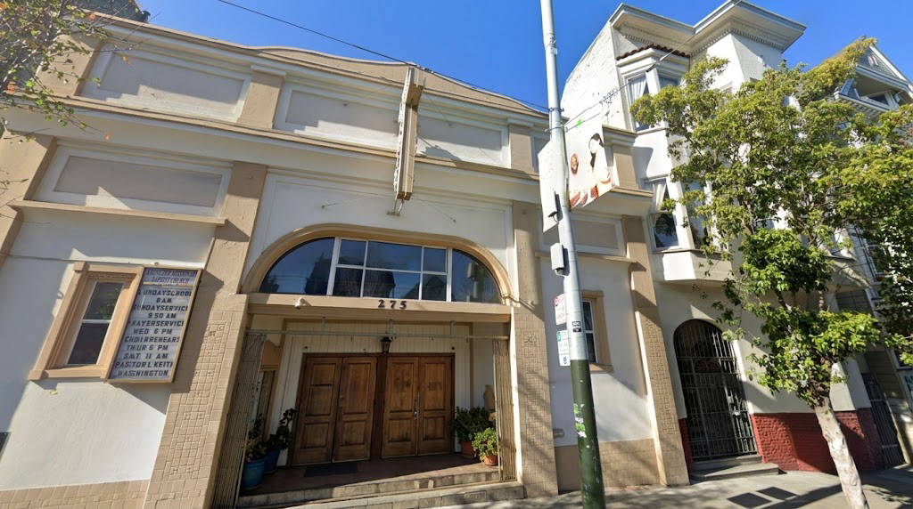
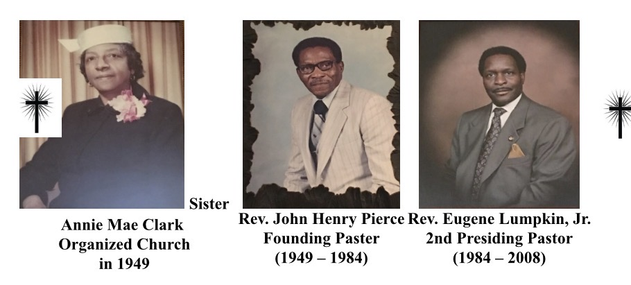

Ebenezer Missionary Baptist Church was organized in 1949, the year following the Second World War, and incorporated in 1951. We had our beginning on Easter Sunday morning where services were held at 1622 McAllister Street in San Francisco, California at the home of Brother and Sister Willie McHenry with 22 members in attendance.
Our 22 Founding Members: Reverend John H. Pierce, Ruby Pierce, John H. Pierce, Jr., Annie Mae Clark, Roosevelt Clark, Stella Hall, Barney Jackson, Ruby Jackson, Will Jackson, Charley Perkins, Mattie Perkins, Velma Williams, Gus Mitchell, Susie Mitchell, Essie B. Evans, George Earvin, Mona Brown, Willie B. McHenry, Lula McHenry, Ruth Washington, Doris J. Brown/Jenkins, and Geraldine Powell.
We came to order with a scripture by Sister Annie M. Clark reading I Samuel 7:12.
The late Reverend John H. Pierce was chosen as our Pastor. Though the membership was small and our beginnings humble, we had faith to believe that through the leadership and guidance of the Holy Spirit, we could grow stronger and thrive for the “Up building of God’s Kingdom.” The church moved to 22 Turk Street because of re-development. Later the Church located and purchased its current location at 275 Divisadero Street in San Francisco, which was formerly a gymnasium for the Boys and Girls Club.

With the acquisition of the building the Founding Members, and those who joined, labored diligently to get the Sanctuary ready for worship on the third Sunday in October 1953. In fact, those Founding Members marched from Turk Street to Divisadero Street, as they had a “Mind to Work” and a heart to serve with a goal of letting nothing interfere with their desire to “press toward the mark for the prize and to the high calling of Jesus Christ our Lord.”
The first Officers of the church were Brother Gus Mitchell (Chairman of the Deacon Board), Brother Willie McHenry (Chairman of the Trustee Board), Sister Mattie Perkins (Church Clerk), Brother Roosevelt Clark (Treasurer), Sister Geraldine Powell (Secretary of the Sunday School), and Sister Essie B. Evans (Financial Secretary and organizer of the Baptist Training Union).
Our Heavenly Father and Savior, Jesus Christ, saw fit to bless Ebenezer over the years. We went from having folding chairs in the Sanctuary to having our first pews hand made by Brother Peyton Hunter. An organ and piano were later purchased along with new carpeting.
Our founding Pastor, the late Reverend John H. Pierce served as Pastor for 35 years from 1949 to 1984. Having served as Assistant Pastor from 1980 to 1984, the late Reverend Eugene Lumpkin, Jr., was chosen as our Pastor upon the retirement of Rev. Pierce. Having served as Pastor for 24 years, Rev. Lumpkin retired as Pastor in May 2008.
Our current Pastor, Elder L. Keith Washington, was chosen as Assistant Pastor in 2000. After many years of service and having worked closely with Reverend Lumpkin, Elder L. Keith Washington was elected as our Pastor in May 2008.
Pastor L. Keith Washington was born and raised in Monroe, LA. He graduated from Wossman High School & continued his education at Southern University; receiving a B.S. degree in Business Marketing. After graduation from Southern, Pastor Washington moved to California, where he united with the Trinity Baptist Church of San Mateo. There, he served as an active member, and acknowledged his call to the gospel ministry; as such, he attended Fuller Theological Seminary to complete his Masters of Divinity degree. Pastor Washington joined Ebenezer under the Pastorate of Rev. Eugene Lumpkin, Jr. & became the Asst. Pastor in 2000. With 25 years ministry experience, he has faithfully served here for more than 15 years, & recently celebrated his 8th year as Pastor in June 2016. He is a devoted husband & father to his lovely wife, Yolanda, & their three daughters, Emani, Britani & Briana.

We believe that the Holy Bible was written by men divinely inspired, or inbreathed; and is a perfect treasure of heavenly instruction; that it has God for its author, salvation for its end, and truth without any mixture of error for its matter; that it reveals the principles by which God will judge us; and therefore is, and shall remain to the end of the world, the true basis of Christian union, and the supreme standard by which all human conduct, creeds, and opinions shall be tried.
II Timothy 3:16-17; II Peter 1:21; II Timothy 3:15; Acts 11:14; Proverbs 30:5-6; John 17:17; Romans 2:12; I Corinthians 4:3-4; Philippians 3:16; Ephesians 4:3-6; I John 4:1; Jude 3 & 5.
We believe that there is one, and only one, living and true God, an infinite, intelligent Spirit, whose name is Jehovah, the Maker and Supreme Ruler of the universe; inexpressibly glorious in holiness, and worthy of all possible honor, confidence, and love; that in the unity of the Godhead, there are three separate and distinct persons, the Father, the Son, and the Holy Spirit; equal in every divine perfection, and executing distinct but harmonious offices in the great work of redemption.
John 4:24; Psalm 83:18; Exodus 15:11; I Peter 1:15-16; Mark 12:30; Revelation 4:11; Matthew 28:19; John 15:26; 10:30; Acts 5:3-4; Ephesians 2:18; II Corinthians 13:14; Revelation 1:4-5.
We believe that man was created in a state or condition of holiness, under the law of his Maker; but by a voluntary transgression he fell from that happy and holy state; in consequence of which all mankind are now sinners, not by constraint but by choice; being by nature utterly void of that holiness required by the law of God, inclined to evil; and therefore under just condemnation to eternal ruin, without defense or excuse.
Genesis 1:27; Acts 15:26; Genesis 3:6-24; Romans 5:12, 19; Psalm 51:5; Romans 8:7; Isaiah 53:6; Romans 3:9-18; Ephesians 2:1-3; Romans 1:18; Galatians 3:10, 2; Ezekiel 18:19-20.
We believe that the salvation of sinners is wholly by grace; through the mediatorial offices of the Son of God; who by the appointment of the Father, freely took upon Himself our nature, yet without sin; honored the divine law by His personal obedience, and by His death made a full atonement for our sins; that having risen from the dead, He is now enthroned in heaven; and uniting in His wonderful person the tenderest sympathies with divine perfections, He is every way qualified to be a suitable, a compassionate, and an all sufficient Savior.
Ephesians 2:5; 2:8-10; John 4:10; Acts 15:11; John 3:16; John 1:1-14; Hebrews 4:14; Philippians 2:6-7; II Corinthians 5:21; Isaiah 42:21; Galatians 4:4-5; Romans 3:21; Isaiah 53:3, 5; Matthew 20:28; Romans 3:21-26; 9:13-15; Hebrews 1:8; Hebrews 1:3; Colossians 3:1-4; Hebrews 7:25; Psalm 89:19, and Psalm 45.
We believe that the great gospel blessing which Christ secures to those who believe in Him is salvation; that this includes all the divine redemptive acts of God on behalf of the sinner, such as justification, which is the divine act of God whereby He declares a believer just; redemption, the divine act of God whereby He purchased by the shed blood of Christ, and by His mighty power, the freedom of the believer from the power and dominion of sin; grace, the divine disposition of God wherein He saves men, not by any merit or work of their own, but wholly by the work and merit of Christ; propitiation, the divine act of God in offering Christ as the sinner's substitute; imputation, the divine act of God whereby He imputes or counts the righteousness and excellencies of Christ to the believer; forgiveness, the divine act of God by which He remits the sins of a believer; sanctification, the divine act of God whereby He imparts His holiness to the inner man, or new born one, and sets apart the entire man to the service of God; glorification, the divine act of God whereby that element or part of man which is mortal will be changed into a state and condition of immortality.
Matthew 1:21; Romans 1:16; Acts 4:12; 10:43; Romans 4:1-5, 13-25; 5:1; Galatians 3:11; Romans 3:24; I Corinthians 1:30; Hebrews 9:12; I Peter 1:18; Ephesians 2:5, 8-10; I John 1:2; Romans 3:25; 4:8, 9; Acts 5:31; Ephesians 1:7; Colossians 1:14; John 17:17, 19; Acts 20:32; I Corinthians 1:2, 6:11; Ephesians 5:26; I Thessalonians 5:23; I John 3:9; II Peter 1:4; I John 3:1-2; Philippians 3:20-21; I Corinthians 15:51-53; Romans 8:17.
We believe that the blessings of salvation are made free to all by the gospel; that it is the immediate duty of all to accept them by a cordial, penitent, and obedient faith; and that nothing prevents the salvation of the greatest sinner on earth, but his own inherent depravity and voluntary rejection of the gospel; which rejection involved him in an aggravated condemnation.
Isaiah 55:1; Luke 14:17; Revelation 22:17; Romans 16:26; Mark 1:15; Romans 1:15-17; John 5:40; Matthew 23:37; Romans 9:32; Proverbs 1:24; John 3:19; Matthew 11:20; Luke 19:27; II Thessalonians 1:8.
We believe that in order to be saved, sinners must be regenerated, or "born from above;" that regeneration consists in giving a holy disposition to the mind; that it is effected in a manner above our comprehension by the power of the Holy Spirit, in connection with divine truth, so as to secure our voluntary obedience to the gospel; and that its proper evidence appears in the holy fruits of repentance, faith, and newness of life.
John 3:3, 5, 7; I Corinthians 1:14; Revelation 21:27; II Corinthians 5:17; Ezekiel 36:26; Romans 2:28-29; 5:5; I John 4:7; John 3:8; 1:13; Philippians 2:13; James 1:16-18; I Peter 1:22, 25; I John 5:1; Colossians 3:9-11; Ephesians 5:9; Galatians 5:19-23; Matthew 3:8-10; I John 5:4, 18.
We believe that repentance and faith are sacred duties, and also inseparable graces, wrought in our souls by the regenerating Spirit of God; whereby being deeply convinced of our guilt, danger, and helplessness, and of the way of salvation by Christ, we turn to God with unfeigned contrition, confession, and supplication for mercy; at the same time heartily receiving the Lord Jesus Christ as our Prophet, Priest, and King, and relying on Him alone as the only and all sufficient Savoir.
Mark 1:15; Ephesians 2:8; I John 5:1; John 16:8; Acts 2:37-38; 16:30, 31; Luke 18:13; James 4:7-10; II Corinthians 7:11; Romans 10:9-11; Acts 22, 23; II Timothy 1:12.
We believe that election is the eternal purpose of God, according to which he graciously regenerates, sanctifies, and saves sinners; that being perfectly consistent with the free agency of man, it comprehends all the means in connection with the end; that it is a most glorious display of God's sovereign goodness, being infinitely free, wise, holy, and unchangeable; that it utterly excludes boasting, and promotes humility, love, prayer, praise, trust in God, and active imitation of His free mercy; and it encourages the use of means in the highest degree; that it may be ascertained by its effects in all who truly believe the gospel; that it is the foundation of Christian assurance; and that to ascertain it in regard to ourselves demands and deserves the utmost diligence.
II Timothy 1:8-9; Ephesians 1:3-14; Hosea 11:1; II Thessalonians 2:13-14; Acts 13:48; John 10:16; Exodus 33:18-19; Romans 11:28-29; James 1:17-18; I Corinthians 4:7; I Peter 2:9; Ephesians 1:16; II Timothy 2:10; I Corinthians 9:22; I Thessalonians 1:4-10; Romans 8:28-31; II Peter 1:10-11; Philippians 3:12.
We believe that such only are real believers as endure unto the end; that their persevering attachment to Christ is the grand mark which distinguishes them from superficial professors; that a special providence watches over their welfare, and that they are kept by the power of God through faith unto salvation.
John 8:31; I John 2:27-28; 5:18; 2:19; John 13:18; Matthew 13:20-21; John 6:66-69; Romans 8:28; Jeremiah 32:40; Philippians 1:6; 2:12-13; Hebrews 13:5; I John 4:4.
We believe that the law of God is the eternal and unchangeable rule of His moral government; that it is holy, just and good; and that the inability which the Scriptures ascribe to fallen men to fulfill its precepts, arises entirely from their love of sin; to deliver them from which, and to restore them through a Mediator to unfeigned obedience to the holy law, is one great end of the gospel, and of the means of grace connected with the establishment of the church.
Romans 3:21; Matthew 5:17; Romans 3:20; 4:15; 7:12; Galatians 3:21; Psalm 119; Romans 8:7-8; John 5:44; 6:44; Joshua 24:19; Jeremiah 13:23; Romans 8:2,4; Romans 10:4; Hebrews 12:14; Matthew 16:17-18; I Corinthians 12:28.
We believe that a church of Jesus Christ is a congregation of baptized believers, associated by covenant in the faith and fellowship of the gospel; observing the ordinances of Christ; governed by His law; and exercising the gifts, rights, and privileges invested in her by His Word; that her only Scriptural officers are bishops or pastors, and deacons, whose qualifications, claims and duties are defined in the Epistles to Timothy and Titus.
I Corinthians 1:1-13; Matthew 18:17; II John 9; Acts 2:41-42; I Corinthians 5:12-13; Matthew 18:15-20; 28:20; John 14:21; Ephesians 4:7; Philippians 1:27;1:1; I Timothy 3.
We believe that Scriptural baptism is the dipping into water of a believer in Christ, in the name of the Father, and of the Son, and of the Holy Spirit; to show forth in a solemn and beautiful emblem, our faith in the crucified, buried, and risen Savoir, with its effect, in our death to sin and resurrection to a new life; that it is pre-requisite to the privileges of a church relation; and to the Lord's Supper in which the members of a church by the sacred use of the unleavened bread and the fruit of the vine, are to commemorate together the undying love of Christ; preceded always by a solemn self-examination.
Acts 8:36-39; Matthew 3:5, 6; 28:18-20; Romans 6:4; Acts 2:41-42; I Corinthians 11:26; 11:28; I Corinthians 5:1, 8; John 6:26-71.
We believe that the first day of the week is the Lord's Day; that it is to be kept sacred as a memorial of the resurrection of Christ from the dead; that Christians should refrain from all secular labor and worldly recreations, that we should devoutly use all the means of grace, both private and public, by which we may be drawn closer to God and provoked to holier living, and in preparation for our eternal abode in the presence of God.
Acts 20:7; Colossians 2:16-17; I Corinthians 16:1-2; Revelation 1:10; Psalm 118:24; Isaiah 58:13-14; Hebrews 10:24-25; Hebrews 4:3-11.
We believe that civil government is of divine appointment and arrangement, for the best interests and good order of human society; and that magistrates are to be prayed for, conscientiously honored and obeyed; except in matters opposed to the will of our Lord Jesus Christ, who is the only Lord of men's consciences, and the Prince of the kings of the earth.
Romans 13:1-7; Deuteronomy 16:18; Jeremiah 30:21; Matthew 22:21; I Peter 2:13; Acts 5:29; Matthew 10:28; Daniel 3:15-18; Matthew 23:10; Romans 14:4; Revelation 19:6; Psalm 2.
We believe that there is a radical and essential difference between the righteous and the wicked; that such only as through faith are justified in the name of the Lord Jesus, and sanctified by the Spirit of our God, are truly righteous in His esteem; while all such as continue in impenitence and unbelief are in His sight wicked, and under the curse; and this distinction holds among men both in and after death.
Malachi 3:18; Proverbs 12:26 Acts 10:34-35; Romans 1:17; 7:16; I John 3:7; I John 2:29; Galatians 3:10; Proverbs 14:32; Luke 16:25; Matthew 13:14.
We believe that there will be a resurrection, both of the righteous and the wicked; that there will be one thousand years of time intervening between the resurrection of the righteous and that of the wicked; that the dead in Christ shall rise first; and that at the expiration of the one thousand years the wicked will then be raised and judged.
Acts 26:8; Acts 24:15,21; John 5:28-29; I Corinthians 15:51-52; I Thessalonians 4:13-18; Revelation 20:4-6; Revelation 20:12-15.
We believe that at the end of the gospel age Christ will appear and that the sleeping saints will be resurrected and that the living saints will be instantaneously changed and all together caught up to the Lord. This we believe will occur at the beginning of Daniel's Seventieth Week. During the first three and one half years the beast will deceive the Jews, and all the people, for a while, and that the world's government will be organized under the domination of the beast. The beast will, at the beginning of this week, or seven year period, make a covenant with the elect (the Jews) to rebuild their temple and restore their ancient worship, but in the middle of that week he will break that covenant and The Great Tribulation period will then begin and will continue for three and one-half years. During this period the saints who shall then be with Christ shall receive their rewards, and the Lamb and the bride (the church) shall be married. The Great Tribulation period will climax with the battle of Armageddon; at this time Christ will destroy these armies, the judgment of nations will set, the living wicked will be destroyed, and the Millennial reign of Christ and His saints over the earth will begin.
Daniel 9:20-27; I Thessalonians 4:13-18; I Corinthians 15:51-53; Revelation 19:7-10; II Corinthians 5:1-10; Revelation 22:12; Zechariah 14; Matthew 25:31-46; Revelation 19:11-21.
We believe that there will be a judgment of rewards for the righteous; that this judgment will take place at Christ's coming to receive His saints; that the wicked will be judged after the millennial age, or at the close of it.
II Corinthians 5:10; Psalm 58:11; Proverbs 11:18; I Corinthians 3:8; 11-15; Revelation 11:18; 22:12; 20:12-15.
We believe that this earth itself will be redeemed from the curse of sin and fitted as the eternal dwelling place of the people of God; that this fitting of the earth for the eternal home of the redeemed will be by a process of purification by fire, or melting; that the finally impenitent and incorrigible wicked will be cast, both souls and resurrected bodies, into Gehenna, or the lake of fire and brimstone, where they shall be punished forever and forever.
Isaiah 66:17; Romans 8:20-22; Hebrews 1:10-12; II Peter 1:10-13; Revelation chapters 21 and 22; Psalm 9:17; Proverbs 27:20; Ezekiel 31:16; Matthew 5:29-30; Luke 12:5; Jude 7; Revelation 20:10; 21:8; Matthew 10:28.